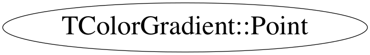

class TColorGradient::Point
TColorGradient TColorGradient extends basic TColor. Actually, this is not a simple color, but linear or radial gradient for a filled area. By inheriting from TColor, gradients can be placed inside gROOT's list of colors and use it in all TAttXXX descendants without modifying any existing code.
Function Members (Methods)
public:
| ~Point() | |
| TColorGradient::Point& | operator=(const TColorGradient::Point&) |
| TColorGradient::Point | Point() |
| TColorGradient::Point | Point(const TColorGradient::Point&) |
| TColorGradient::Point | Point(Double_t x, Double_t y) |
Class Charts



Function documentation
Point()